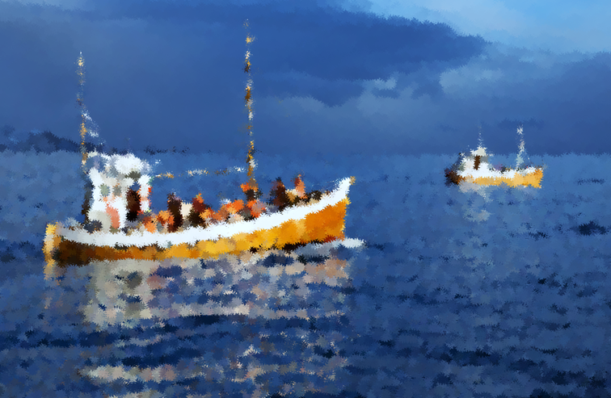
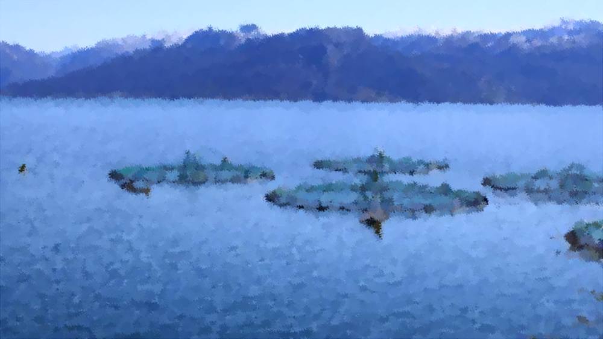
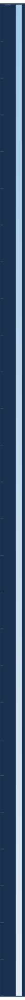
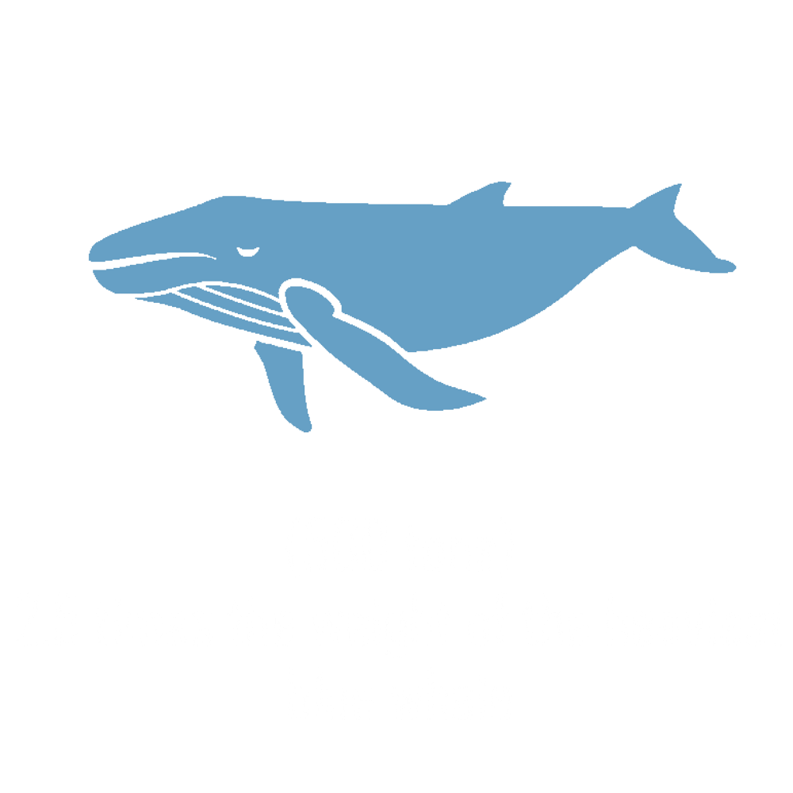
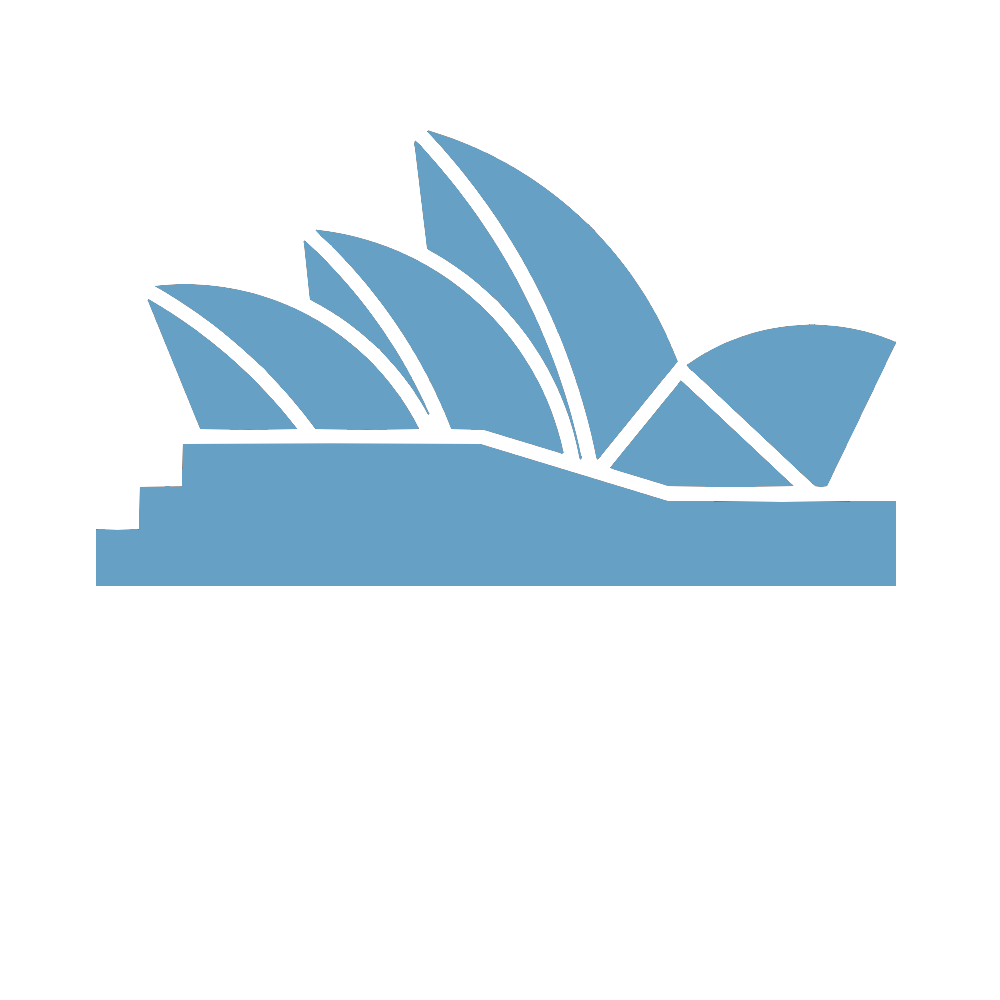
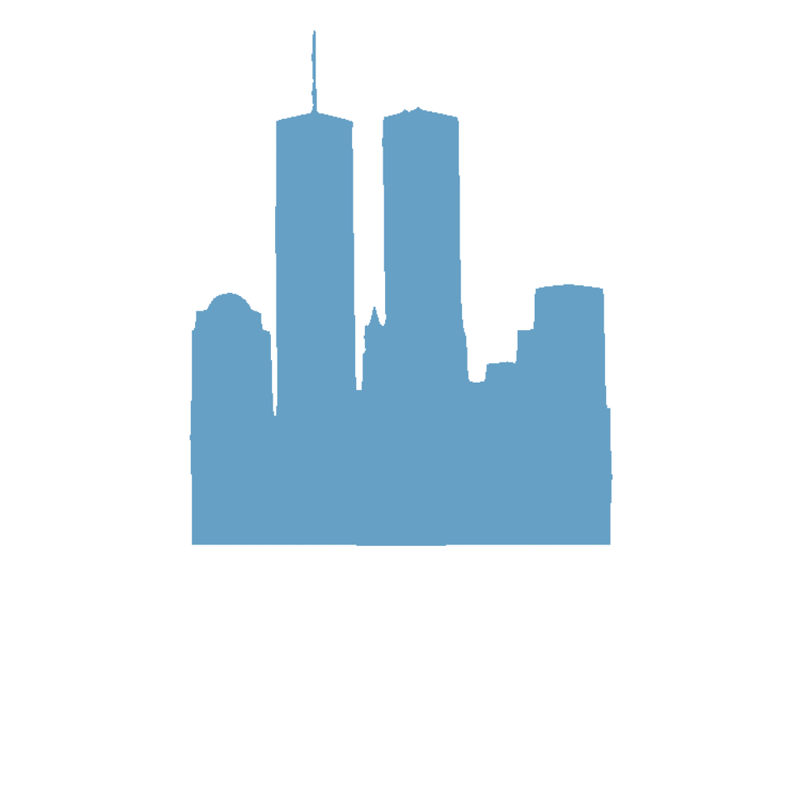
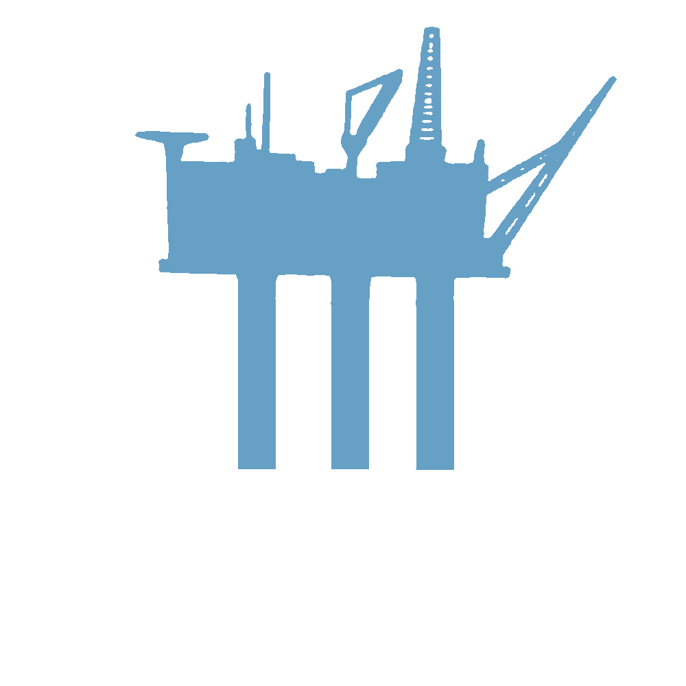

The human population has never been this big before, and with 385,000 babies being born every day we are rapidly reaching the 8 billion people mark. With an increasing population there is also an increasing demand for food rich in protein and other essential nutrients. Traditional agriculture is having a hard time keeping up with the demands and is impossible to maintain sustainably on such a scale, maybe the solution is not on land but rather in the ocean?
The Atlantic salmon (Salmo salar L.) is arguably the world’s most iconic fish: it’s crimson pink flesh, smooth texture and distinct flavour makes it an appealing ingredient in many dishes around the world. What makes the salmon a particularly great fish is that it has a big meat yield and up to 60% of its body mass can be consumed. Additionally, the meat is an excellent source of protein (containing all the 9 essential amino acids), as well as healthy fats such as omega-3 fatty acids.
GLOBAL PRODUCTION OF SALMON IS ESTIMATED TO 3.6 MILLION TONS (2018)
BUT WHERE DOES THE FISH COME FROM?
The fishery industry
Traditionally salmon was caught through fishing, either by putting out fishing nets in rivers or by boat, however in the last decades wild salmon has declined considerably in countries like Norway. The number of Norwegian wild salmon returning from the ocean to spawn is now less than 500 000, which is less than half the number of wild salmon in the 1980s. This has resulted in the salmon fishery being tightly regulated, in addition to this, the season for fishing salmon is only 2 month long. In summary, salmon fishery does not provide big catch yields: in 2019 around 500 metric tons of wild salmon was fished in Norway, this is not even enough to feed 100 grams of salmon to every Norwegian. So, where does the rest of the fish come from?
The Aquaculture industry
Today, most of the salmon we consume worldwide comes from the aquaculture industry and the countries with the largest production are Norway and Chile. Together, Norway and Chile’s production amounted to around 80% of all the farmed salmon in 2018. Norway’s Aquaculture in particular has grown rapidly over the years, from its humble beginnings in the 1970s where production was close to 500 tons, till 2020 where it reached close to 1.4 million metric tons!
It is hard to comprehend such a massive amount, so let’s put it into perspective...
     HOW ARE WE ABLE TO PRODUCE THIS MUCH SALMON?
Adult farmed salmon is kept in large system floating cages, usually suspended in the ocean. The largest pens have a volume up to 315 000 m3 and can house up to 200 000 fish, meaning each individual fish has about 1.5 m3 of swimming space.
The salmon will be kept here up for to two years, until they have reached the ideal weight of 3-5 kg. Then the salmon will be harvested and slaughtered. A few individuals will be chosen as brood stock to make more salmon so that the cycle can be repeated.
WILD AND FARMED SALMON ARE SIGNIFICANTLY DIFFERENT DUE TO DOMESTICATION,
SIMILAR TO THE WILD BOAR AND THE DOMESTIC PIG
One of the most important changes that has been done to the farmed salmon is a decrease in its trophic levels.
Trophic levels describe a step in a food chain; on land the first trophic level would be plants. Cows, which eat grass,
would be the second trophic level. Humans are usually on the third trophic level because we rarely eat animals that eat
other animals.
However, this is not true for the marine system..
In the ocean, most carnivorous fish species feed on a trophic level of 3 to 5. The wild salmon is at a trophic level 4,
making them about the same trophic level as wolves.
If we were to farm wolves for their meat, how many resources would we need to feed them? First we would need to grow grass,
then feed the grass to cows and later feed the cows to foxes until finally we could feed our wolves. Considering with every
level we lose about 90\% of the food energy, this is not a very effective system.
To make farming more effective and sustainable, the farmed salmon has been brought down almost 2 trophic levels. This has been done by reducing the contents of marine animal resources in their feed, now these resources only constitute 18-21% of the dry feed while the remaining 79-81% is from plants and from agriculture.
YOU ARE WHAT YOU EAT… RIGHT?
The salmon, much like us, cannot produce certain nutrients on their own, it must be obtained through their diets. Even the beloved omega-3 fatty acids that we give salmon so much credit for is actually the hard work of small algae called phytoplankton \cite{Kang}. Thus, by reducing the marine resources consumed by farmed salmon we are bound to lose some of those amazing nutritional benefits, right? Not exactly. It is somewhat of a misconception that farmed fish is nutritionally inferior to farmed and in some instances they actually contain more omega 3 (per serving). Part of the reason is that aquaculture can control the dietary needs of each salmon, whereas the wild salmon has individual variation in nutritional content which fluctuates depending on the food availability.
The farmed salmon you buy in a store usually has a higher fat percentage compared to wild type (12% vs. 4%), this is mostly due to the farmed salmon having a high fat diet to optimize growth. The wild salmon can be just as fatty, but because we mostly catch the fish after they have began to migrate up the rivers they have lost most of their fat deposits. One of the most noticeable differences due to feed is the colour. The iconic pink salmon colour actually comes from a chemical compound in the krill and fish they eat, and because farmed salmon does not have high contents of marine resources in their feed their flesh is actually grey. This does not seem that appetizing, does it? Therefore the this compound is added artificially to their feed in order to "dye" the meat pink.
WE CAN'T LET AQUACULTURE OFF THE HOOK
Alas, not all that glitters is gold. The aquaculture industry has many times been under scrutiny by both the media and the scientific community, most notably due to accumulation of sea lice in the crammed sea pens. These do not only wreck havoc on the farmed salmon, but also caused an on-going sea lice epidemic in the Norwegian wild salmon population. Escaped domestic salmon can also ''pollute'' the genes of wild salmon by breeding with them, which has been shown to reduce their viability \cite{Fiske}. Environmental pollution is also a huge issue due to excess feces and left-over food particles, if this is not filtered properly it can become highly concentrated in the water masses. This can in some cases create suitable habitats for potentially toxic algae blooms.
Thus, ironically enough, the biggest threat on the wild salmon population is farming salmon.
TEACHING A MAN TO FISH
Compared to agriculture, aquaculture as we know it is relatively young and we have yet to work out it's kinks.
Let us not assume that it's older brother is without fault however. Perhaps due to how long agriculture has been around
and its cultural importance we have a much higher tolerance for the damage it has done and continues to do. Yet,
it is still important to consider the damaging effects of aquaculture can have on our marine wildlife and find mitigating
options.
Because so many people depend of salmon as a healthy and nutritious food resource, completely shutting down aquaculture production is not a realistic option. A method could be improving the quality of sea pens, for example by closing them off from direct contact with the marine environment. This is a possible alternative to reduce environmental pollution and the spread of sea lice to the wild populations. Change rarely happens spontaneously, to change the industry we as consumers must demand higher standards for how we want our food to be produced. By giving the people fish, you feed them for a day. If you teach the public about the salmon industry, we might be able to feed our world sustainably in a way which our future generations can also enjoy.